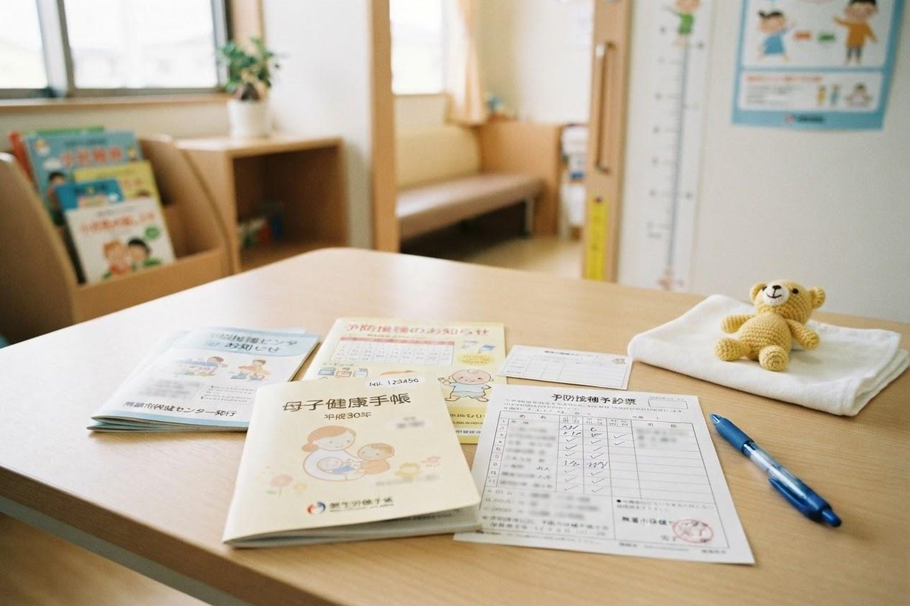

子どもの予防接種はいつ頃から、どう予約すればいいですか？
A. 回答多くの定期接種は生後2か月頃から始まります。当院では4種/5種混合、ロタウイルス、ヒブ、肺炎球菌（小児用）、日本脳炎、麻しん・風しん、水痘、おたふくかぜなど幅広いワクチンに対応しており、お電話（086-525-0600）でご予約いただけます。

この記事の制度に関する内容は2026年8月時点のものです。定期接種の種類やスケジュールは改定されることがあります。最新の内容は倉敷市または当院にご確認ください。
当院で対応しているワクチン（一例）
- 4種混合・5種混合、ロタウイルス
- ヒブ、小児用肺炎球菌
- 麻しん・風しん、水痘、おたふくかぜ
- 日本脳炎、不活化ポリオ
- A型肝炎・B型肝炎
- インフルエンザ、破傷風・百日せき
- HPV
スケジュールの立て方と母子手帳の使い方
ワクチンの種類によって接種開始時期や間隔が異なり、複数のワクチンを組み合わせるケースも多いため、個々のスケジュールについては診察時に医師と相談しながら決めていくことをおすすめします。母子手帳をお持ちいただくと、これまでの接種状況を確認しながらご案内できます。
スケジュールを考えるときの出発点になるのは、生後2か月の誕生日です。この時期から始まるワクチンがいくつかあり、ここを起点に数か月先までの見通しを立てておくと、その後の予定が組みやすくなるとされています。多くのワクチンは決められた月齢のあいだに決められた回数を受ける形になっているため、最初の予定が後ろにずれると、その先も少しずつずれていきます。
母子手帳の予防接種の記録欄は、接種の証明であると同時に、次に何を受けるかを考えるための地図でもあります。就園・就学のときなど、思わぬ場面で過去の記録を確認することがありますので、受診のときは必ずご持参ください。紛失に備えて記録欄を写真に撮っておく方法もよく使われています。
体調をくずして予定どおりに受けられなかった、里帰りで間があいた、といった理由で接種が抜けてしまうことは珍しくありません。気づいたときは母子手帳を持って一度ご相談ください。対象年齢の範囲内であれば残りの回数から続けられる場合があります。ただし公費で受けられる期間はワクチンごとに決まっていますので、早めのご確認をおすすめします。
定期接種と任意接種のちがい
子どもが受けるワクチンは、大きく「定期接種」と「任意接種」に分けられます。定期接種は予防接種法にもとづいて国や自治体がすすめているもので、決められた期間内であれば公費で受けられます。任意接種は希望する方が受けるもので、原則として自己負担となります。
| 項目 | 定期接種 | 任意接種 |
|---|---|---|
| 位置づけ | 予防接種法にもとづき、国や自治体がすすめているもの | ご本人・保護者の希望で受けるもの |
| 費用 | 対象期間内であれば公費で受けられます | 原則として自己負担。自治体の助成がある場合も |
| 受けられる時期 | ワクチンごとに対象年齢の範囲が決まっています | 推奨時期の目安はありますが比較的ゆるやかです |
| 受け忘れたとき | 対象期間を過ぎると公費の対象外となることも | 時期を過ぎても自己負担で受けられることも |
「任意」という言葉から重要度が低いように受け取られることがありますが、任意接種のワクチンも、かかると重くなることがある感染症を防ぐ目的で用意されているものです。定期・任意にかかわらず、お子さまにとっての必要性は診察時にご相談ください。なお、どのワクチンが定期接種にあたるかは年度や自治体によって見直されることがあります。
同時接種と接種間隔の考え方
乳児期は受けるワクチンの種類が多く、1本ずつ受けていると来院の回数がかなり増えてしまいます。そのため、同じ日に複数のワクチンを接種する「同時接種」が広く行われています。決められた月齢のうちに必要なワクチンを受け終えやすくなること、通院の負担が減ることなどが利点とされています。接種のときは複数のワクチンを1本の注射器に混ぜることはせず、別々の場所に接種します。
接種の間隔については、2020年10月から規定が変わりました。注射する生ワクチンどうしの組み合わせでは前の接種から27日以上あけることとされていますが、それ以外の組み合わせでは、前の接種からの間隔にかかわらず次の接種を受けられるようになっています。ただし同じワクチンを複数回受ける場合は、決められた回数と間隔を守る必要があります。
何本まとめて受けるか、どの順番で進めるかは、お子さまの月齢・体調・これまでの接種状況によって変わります。「一度にたくさんは心配」というお気持ちがある場合は、無理にまとめず日を分ける進め方もありますので、診察のときに遠慮なくお伝えください。
接種の前後で気をつけたいこと
接種当日は、まずお子さまの体調を確認します。明らかな発熱がある場合や、普段と様子が大きく違う場合は、日を改めていただくことになります。受けてよいか迷うときは、来院前にお電話（086-525-0600）でご相談いただくとスムーズです。
接種前にご確認いただきたいこと
- 今朝の体温を測りましたか（普段の平熱もわかると判断の助けになります）
- ここ数日、発熱・下痢・発疹などはありませんでしたか
- これまでの接種のあとに、強い反応が出たことはありませんか
- 食べ物や薬でアレルギー症状が出たことはありませんか
- 治療中の病気や、続けて飲んでいるお薬はありませんか
- 母子手帳はお持ちですか（腕を出しやすい服装だと安心です）
接種のあとは、まれに強い反応が起こることがあるため、しばらく院内や近くで様子をみていただくようご案内する場合があります。当日の入浴は差し支えないとされていますが、接種した部分を強くこすらないようにしてください。激しい運動は控えめにし、あとはいつもどおりの生活で構いません。
接種した部分の赤み・腫れ・軽い痛み、機嫌の悪さ、微熱などは接種後に比較的みられる反応とされ、多くは数日のうちに落ち着いていくといわれています。一方で、高い熱が続く、けいれんがある、ぐったりして反応が乏しい、全身に発疹が出て息が苦しそう、といった様子がみられる場合は、様子をみずに医療機関にご相談ください。夜間や休日で判断に迷うときは、小児救急電話相談（#8000）もご利用いただけます。
予約方法
小児の予防接種はお電話にてご予約いただいています。ご希望の日時、お子さまの月齢・年齢をお伝えください。あわせて、受けたいワクチンの種類やこれまでの接種状況（母子手帳の記録）をお手元にご用意いただくと、ご案内がスムーズです。ワクチンの在庫や当日の枠の状況によってはご希望に沿えないこともありますので、余裕をもってご連絡ください。所要時間の目安もお電話でご確認いただけます。
参考にした情報
予防接種のご予約・ご相談はお電話で
最終更新：2026年8月26日